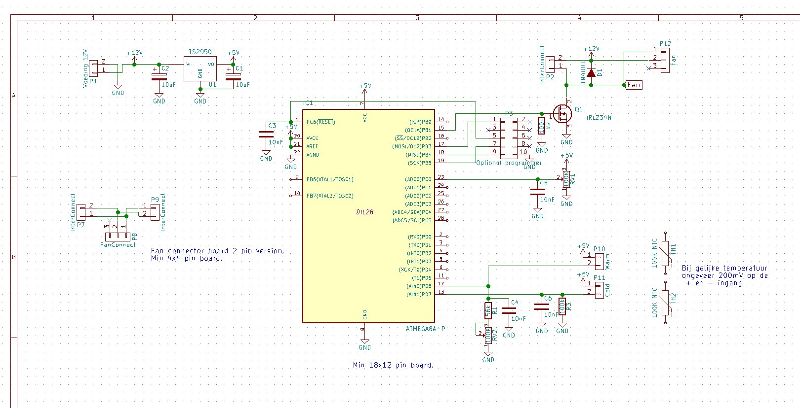
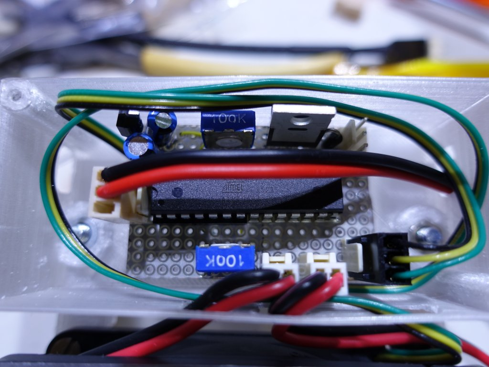
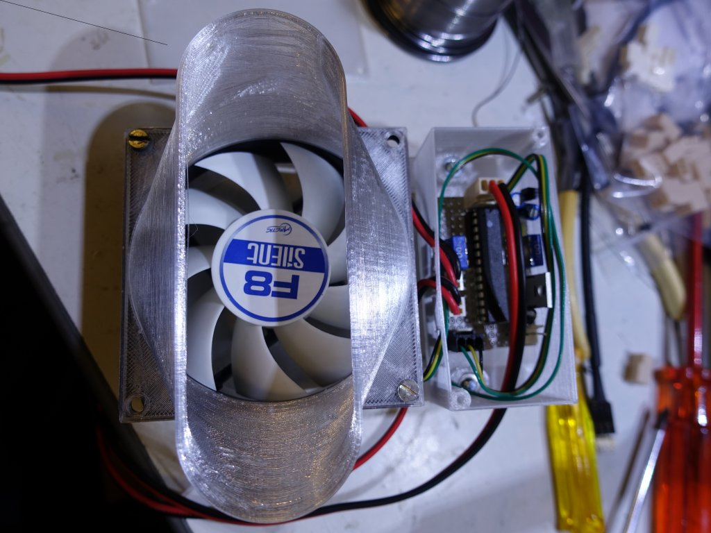
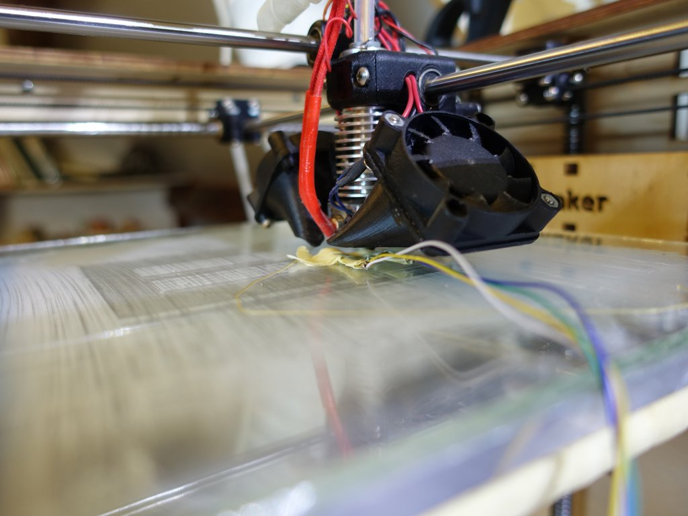

Voorde aansturing heb ik een microcontroller van Atmel gebruikt de AT-mega8. Dit is een processor die ik bijna voor al mijn projecten gebruik. Lekker compact maar toch nog redelijk wat aansluitingen. In principe zou ook een Arduino micro gebruikt kunnen worden maar dat is wel duurder dan de losse processor gebruiken. Ik heb ook niet de standaard 10 pin programmer interface aangelegd ik heb een 28 pins clip die ik op de chip click en dan programmeren maar. Het schema is vrij eenvoudig een spannings regulator 5V, micro controller, 2 instel potmetertjes (een voor de temperatuur voor instelling en een voor de fan snelheid instelling) en twee ntc weerstanden. Ik maak gebruik van 2 ntc weerstanden zodat het verschil gemeten kan worden tussen de verwarming en de omgeving. Daarmee is het mogelijk om met een paar graden temperatuur verschil te kunnen inschakelen zonder dat de omgevings temperatuur dit sterk beinvloed. Dus de warme sensor bij de inlaat van de radiator en de koude sensor ergens onderaan de raditor in de lucht laten hangen. Ik had eerst de koude sensor op de retour leiding geplaatst maar dat werkt minder goed in het geval dat er niet veel warmte overdracht is.

Als er geen snelheids control nodig is dan zou het ook zonder de micro controller kunnen. Een vast voeding van 12 of 9V en een opamp b.v. LM324 en de uitgang van de opamp aansluiten op de gate van de IRLZ34N. Dan kan je de ventilator niet harder of zachter zetten maar misschien is dat ook wel oke.
Hier is een foto van mijn printje. Het kan dus best klein zodat het in het bakje past.

Nu eindelijk de master ventilator waar de micro controller in zit:

De andere ventilatoren hebben allen een interconnect nodig en geen controller zodat je alleen 1 controller per radiator nodig hebt.
Je kan de ventilatoren boven de verwarming gebruiken zoals ik in 'mijn' kamer doe want vlak onder de radiator loop een aanvoer buis:

Of het mooiste onder de radiator monteren:

Om te testen of de sensoren echt onafhangelijk van de omgevings temperatuur zijn heb ik de 3D printer leuk kunnen gebruiken. Monteer beide sensoren op je heated bed en verwarm die iets. Dan moet er geen signaal komen want er is geen verschil temperatuur. Nu met een lage temperatuur instelling van je hotend het hotend tegen een van de sensoren aan parkeren en zo kan je 1 van de sensoren op een gecontrolleerde manier van een andere temperatuur voorzien.

Terug